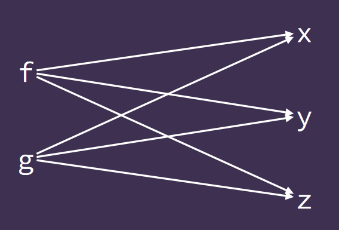

Applicative Functors
Kinds
- For the compiler to accept a program, it must be well typed
- Kinds are the "types of types"
- Types are denoted with
expression :: type- eg
True :: Bool
- eg
- Kinds are denoted the same:
type :: kindBool :: *
- The compiler infers kinds of types the same way it infers types of expressions
*is the kind of typesBool :: *becauseBoolhas no type parametersdata Bool = True | False
Maybeis parametrised over some typea, so the kind signatureMaybe :: * -> *means that if given a type as an argument to the type constructorJust, it will give back some other type of kind*[] :: * -> *[]is the type constructor for lists
Kinds are important when defining typeclasses. Take Functor, for example:
class Functor f where
fmap :: (a -> b) -> f a-> f b
This definition shows that the type f is applied to one argument (f a), so f :: * -> *
-- Maybe :: * -> *
instance Functor Maybe where
fmap f Nothing = Nothing
fmap f (Just x) = Just (f x)
-- invalid
-- Maybe a :: *
-- As the type is already applied to a
instance Functor (Maybe a) where
fmap f Nothing = Nothing
fmap f (Just x) = Just (f x)
The Either Type
Either is usually used to represent the result of a computation when it could give one of two results. Right is used to represent success, and a is the wanted value. Left is used to represent error, with e as some error code/message.
data Either e a = Left e | Right a
Left :: e -> Either e a
Right :: a -> Either e a
Either has kind * -> * -> *, as it must be applied to two types e and a before we get some other type.
Only types of kind * -> * can be functors, so we need to apply Either to one argument first. The functor instance for Either applies the function to the Right value.
instance Functor (Either e) where
fmap :: (a -> b) -> Either e a -> Either e b
fmap f (Left x) = Left x
fmap f (Right y) = Right (f y)
The Unit Type ()
()is called the unit type() :: ()(), the unit value, has type()()is the only value of type()
- Can be thought of as defined
data () = () - Or an empty tuple
Semigroups and Monoids
A type is a semigroup if it has some associative binary operation defined on it. This operator (<>) is the "combine" operator.
class Semigroup a where
(<>) :: a -> a -> a
instance Semigroup [a] where
-- (<>) :: [a] -> [a] -> [a]
(<>) = (++)
instance Semigroup Int where
-- (<>) :: Int -> Int -> Int
(<>) = (+)
A type is a monoid if it is a semigroup that also has some identity value, called mempty:
class Semigroup a => Monoid a where
mempty ::a
instance Monoid [a] where
-- mempty :: [a]
mempty = []
instance Monoid Int where
-- mempty :: Int
mempty = 0
Applicatives
Applicative Functors are similar to normal functors, except with a slightly different type definition:
class Functor f => Applicative f where
pure :: a -> f a
<*> :: f (a -> b) -> f a -> f b
The typeclass defines two functions:
purejust lifts the valueainto the "box"<*>(the apply operator) takes some function (a -> b) in a boxf, and applies it to a valueain a box, returning the result in the same box.- "box" is a rather loose analogy. It is more accurate to say "computational context".
Different contexts for function application:
-- vanilla function application
($) :: (a -> b) -> a -> b
-- Functor's fmap
(<$>) :: Functor f => (a -> b) -> f a -> f b
-- Applicative's apply
(<*>) :: Applicative f => f (a -> b) -> f a -> f b
Maybe and Either e are both applicative functors:
instance Applicative Maybe where
pure x = Just x
Nothing <*> _ = Nothing
(Just f) <*> x = f <$> x
instance Applicative (Either e) where
pure = Right
Left err <*> _ = Left err
Right f <*> x = f <$> x
The "context" of both of these types is that they represent error. All data flow in haskell has to be explicit due to its purity, so these types allow for the propagation of error.
Another example of an applicative functor is a list:
instance Applicative [] where
pure x = [x]
fs <*> xs = [f x | f <- fs, x <- xs]
Every function in the left list is applied to every function in the right:
[f, g] <*> [x, y, z]
=> [f x, f y, f z, g x, g y, g z]
g <$> [x,y] <*> [a,b,c]
=> [g x, g y] <*> [a,b,c]
=> [g x a, g x b, g x c, g y a, g y b, g y c]

The context represented by lists is nondeterminism, ie a function f given one of the arguments [x, y, z] could have result [f x, f y, f z].
Applicative Laws
Applicative functors, like normal functors, also have to obey certain laws:
pure id <*> x = x- The identity law
- applying pure id does nothing
pure f <*> pure x = pure (f x)- Homomorphism
purepreserves function application
u <*> pure y = pure ($ y) <*> u- Interchange
- Applying something to a pure value is the same as applying pure ($ y) to that thing
pure (.) <*> u <*> v <*> w = u <*> (v <*> w)- Composition
- Function composition with
(.)works within apurecontext.
Left and Right Apply
<* and *> are two more operators, both defined automatically when <*> is defined.
const :: a -> b -> a
const x y = x
flip :: (a -> b -> c) -> b -> a -> c
flip f x y = f y x
(<*) :: Applicative f => f a -> f b -> f a
a0 <* a1 = const <$> a0 <*> a1
(*>) :: Applicative f => f a -> f b -> f b
a0 *> a1 = flip const <$> a0 <*> a1
In simple terms *> is used for sequencing actions, discarding the result of the first argument. <* is the same, except discarding the result of the second.
Just 4 <* Just 8
=> const <$> Just 4 <*> Just 8
=> Just (const 4) <*> Just 8
=> Just (const 4 8)
=> Just 4
Just 4 <* Nothing
=> const <$> Just 4 <*> Nothing
=> Just (const 4) <*> Nothing
=> Nothing
Just 4 *> Just 8
=> flip const <$> Just 4 <*> Just 8
=> Just (flip const 4) <*> Just 8
=> Just (flip const 4 8)
=> Just (const 8 4)
=> Just 8
Nothing *> Just 8
=> Nothing
These operators are perhaps easier to understand in terms of monadic actions:
as *> bs = do as
bs
as *> bs = as >> bs
as <* bs = do a <- as
bs
pure a
Example: Logging
A good example to illustrate the uses of applicative functors is logging the output of a compiler. If we have a function comp that takes some Expr type, representing compiler input, and returns some Program type, representing output :
comp :: Expr -> Program
comp (Val n) = [PUSH n]
comp (Plus l r) = comp l ++ comp r ++ [ADD]
-- extending to return a String for a log
comp :: Expr -> (Program, [String])
comp (val n) = ([PUSH n],["compiling a value"])
comp (Plus l r) = (pl ++ pr ++ [ADD], "compiling a plus" : (ml ++ mr))
where (pl, ml) = comp l
(pr, mr) = comp r
This is messy and not very clear what is going on. There is a much nicer way to do this, using the Writer type:
-- w is the "log"
-- a is the containing type (the type in the "box")
data Writer w a = MkWriter (a,w)
--type of MkWriter
MkWriter :: (a,w) -> Writer w a
-- kind of Writer type
Writer :: * -> * -> *
instance Functor (Writer w) where
-- fmap :: (a -> b) -> Writer w a -> Writer w b
fmap f (MkWriter (x,o)) = MkWriter (f x, o) -- applies the function to the x value
-- a function to write a log
-- generates a new writer with a msg and unit type in it's box
writeLog :: String -> Writer [w] ()
writeLog msg = MkWriter((), [msg])
Using this to redefine comp:
comp :: Expr -> Writer [String] Program
comp (Val n) = MkWriter ([PUSH n], m)
where (MkWriter (_, m)) = writeLog "compiling a value"
comp (Plus l r) = MkWriter (pl ++ pr ++ [ADD], m ++ ml ++ mr)
where (MkWriter (pl, ml)) = comp l
(MkWriter (pr, mr)) = comp r
(MkWriter (_, m)) = writeLog
This definition of comp combines the output using Writer, but is messy as it uses pattern matching to deconstruct the results of the recursive calls and then rebuild them into the result. It would be nice if there was some way to implicitly keep track of the log messages.
We can define an instance of the Applicative typeclass for Writer to do this. There is the additional constraint that w must be an instance of Monoid, because we need some way to combine the output of the log.
instance Monoid w => Applicative (Writer w) where
--pure :: a -> Writer w a
pure x = MkWriter (x, mempty)
-- <*> Monoid w => Writer w (a -> b) -> Writer w a -> Writer w b
MkWriter (f,o1) <*> MkWriter (x,o2) = MkWriter (f x, o1 <> o2)
-- f is applied to x, and o1 and o2 are combined using their monoid instance
Using this definition, the comp function can be tidied up nicely using <*>
comp :: Expr -> Writer [String] Program
comp (Val n) = writeLog "compiling a value" *> pure [PUSH n]
comp (Plus l r) = writeLog "compiling a plus" *>
((\p p' -> p ++ p' ++ [ADD]) <$> comp l <*> comp r)
The first pattern uses *>. Recall that *> does not care about the left result, which in this case is the unit type, so only the result of the right Writer is used, which is the [PUSH n] put into a Writer by pure, with a mempty, or [] as the logged value.
The second pattern applies the anonymous function (\p p' -> p ++ p' ++ [ADD]) to the result of the recursive calls. The lambda defines how the results of the recursive calls are combined together, and the log messages are automatically combined by the definition of <*>. *> is used again to add a log message to the program.